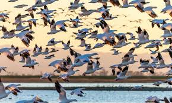

Aves migratorias
 Varias aves migratorias que utilizan Australia como zona de invernada o ruta migratoria se enfrentan a amenazas, incluyendo la pérdida de hábitat, el cambio climático y las actividades humanas, como la pesca con redes de enmallado.
Amenazas
Pérdida de hábitat: La destrucción y fragmentación de los humedales y manglares, vitales para las aves migratorias, es una amenaza grave. Cambio climático: El cambio climático puede alterar los patrones migratorios, los ciclos de reproducción y la disponibilidad de alimentos, afectando negativamente a las aves. Actividades humanas: La pesca con redes de enmallado, el uso de plaguicidas y la contaminación pueden causar la muerte o lesiones en las aves migratorias.